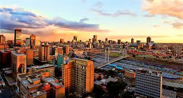
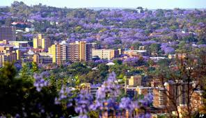
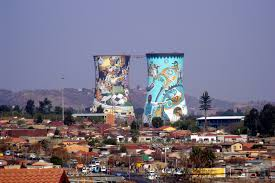
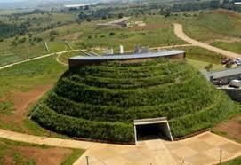

Gauteng is the smallest province in South Africa, but it is highly urbanised,containing the country's largest city Johannesburg, it's administrative capital Pretoria. Gauteng is the most populous province in South Africa.
The following images are places you can explore in Gauteng
   1.Johannesburg-Apartheid Museum(solemn concrete apartheid exhibit space), Gold Reef City(Thrill rides, 4D shows & mining history), Mandela House and Conssitution Hill Human Rights Precinct(old prison complex,now court & museums).
2.Pretoria-Voortrekker monument(monument to Afrikaans settlers), Union Buildings(South Africa's seat of government), National zoological Gardens of South Africa(Extensive zoo & research center) and Freedom Park Heritage site & museum(South Africa history museum & memorial).
3.Soweto-Apartheid museum(solemn concrete apartheid exhibit space), Mandela House,Gold Reef city and Hector Pieterson museum(Soweto rebellion museum & monument).
4.Cradle of Humankind-Sterkfontein caves(subterranean caves filled with fossils), Rhino and Lion Nature Reserve(wildlife & activity park), Walter Sisulu National Botanical Garden(Botanical reserve & popular picnic spot) and Silverstar casino(lavish gambling complex with shows).
1.Ponte City challenge
2.Gone outdoor supply company weekly running club
3.Rage